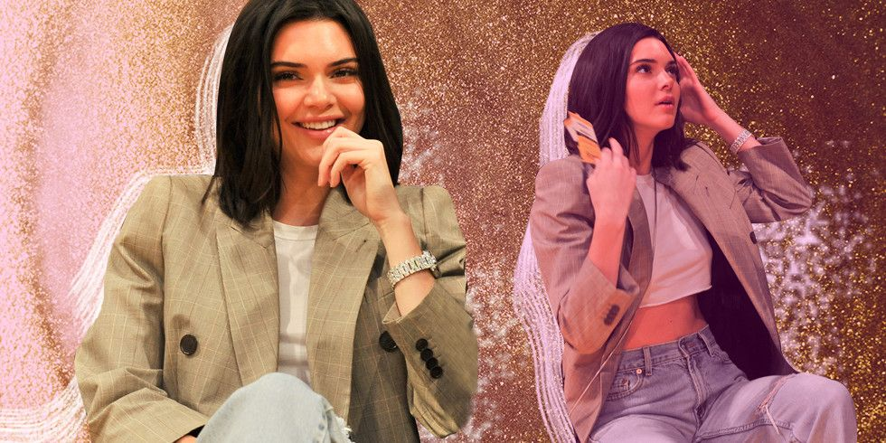

Only Kendall Jenner Could Pull
Only Kendall Jenner Could Pull
Off This Look at a Basketball Game
Really putting the business in business casual.
Whether the dress code is business formal or super casual, here are a few tips to try
Trousers Are Comfortable and Professional
Her fit of choice: longer pants with platform sneakers
AUG 2, 2023
Break Out Your Favorite Blazer
casual look, comfortable and on-trend
JUL 31, 2023
Loafers and Ballet Flats Are The “It” Footwear Options
sharp ballet flats and pointed slingback kitten heels “go with almost everything,”
JUL 26, 2023
Take a glimpse at the actor’s social media account and you
will find surfeit pictures that are bound to awe you. He is a
whole package, not only good at acting but also a good singer.
His taste in clothes is something that you will be thrilled with.